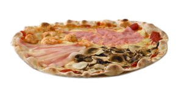
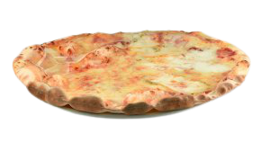
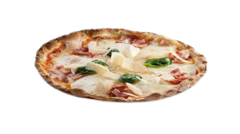
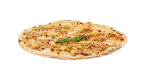
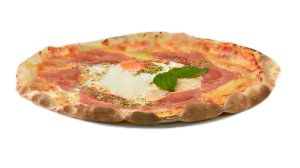
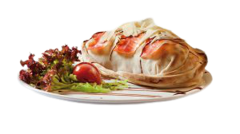

Antipasti
Entrantes ideales para compartir
- Focaccia di Recco - Uovo e Tartufo
- Pane de La Tagliatella
- Provoletta
- Tagliata Napoletana
Con huevo frito, parmigiano reggiano y perlas de trufa negra. Acompañada de confettura de melocotón y variado de lechugas.
Pan tradicional con tomates, aceitunas y cebolla.
Queso provolone fundido con verduras horneadas.
Mozzarella de búfala DOP, aceite de olivas negras, alici marinado, tomate confitado amarillo, aceite de albahaca y perlas de pesto, sobre una base de tomate confitado.
Tartar e Carpaccio
Entrantes ideales para compartir
| Carpaccio di Baccalá | Carpaccio di Vitellone | Steak Tartar Italiano | Tartar di Salmone |
|---|---|---|---|
| Acompañado de tomate confitado, aceite de olivas negras y pistachos. | De ternera, con virutas de parmigiano reggiano. | Acompañado de helado de mostaza, gnocchi fritti y pane pergamena. | Acompañado de pane pergamena. |
Le Pizze
Deliciosa masa fina crujiente y variedad para todos los gustos
| 4 Formaggi | 4 Stagioni | 7 Formaggi | Al Parmigiano |
|---|---|---|---|
 |
 |  |  |
| Tomate, mozzarella, grana padano DOP, gorgonzola DOP y emmental. |
Tomate, mozzarella, champiñones, gambas, embutido guanciale y jamón york. |
Tomate, mozzarella, taleggio DOP, pecorino sardo DOP, gorgonzola DOP, mozzarella de búfala DOP, parmigiano reggiano DOP y gruyère. |
Tomate, mozzarella, parmigiano reggiano DOP, bacon, queso taleggio DOP y albahaca. |
| Bianca di Foie | Bismark | Calzone Toscano | Di Foie |
|  |  |  | |
| Crema de trufa blanca, mozzarella, foie mi-cuit, queso tomino, cebolla pochada y perlas de frambuesa. |
Tomate, mozzarella, jamón york y huevo. |
Tomate, mozzarella, gruyère, queso taleggio DOP, berenjena, crema balsámica, speck IGP y parmigiano reggiano DOP. |
Tomate, mozzarella, champiñones, foie mi-cuit, crema balsámica, perlas de frambuesa y rúcula. |
Dolci
Los Mejores Postres Italianos que encontraras en Cordoba
| Nombre | Precio | |
|---|---|---|
 |
Bocconcino |
3€ |
 |
Caffé Gustoso |
3.5€ |
| Cioccofondente |
2.75€ |
|
| Coppa al Gusto |
3.15€ |
|
| Crepe |
4€ |
|
| Croccantino |
2.60€ |
|
| Tiramisu |
3.10€ |
|
 |
Trufas al Cioccolato |
3.20€ |
 |
Tutto Cioccolato |
3€ |
I Vini
La Mejor Selección de Vino, para acompañar la comida de la Bella Italia.
- Vini Bianchi
- Moscato Bianco DOC
- Príncipe de Viana Blanco (vino della casa)
- Menade Verdejo
- Vini Rosati
- Lambrusco Rosato IGT
- Príncipe de Viana Rosado (vino della casa)
- Azpilicueta Rosado
- Spumanti
- Sangría di Prosecco
- Sangría di vino Lambrusco
- Anna de Codorniu Brut Reserva
- Raimat Brut Nature
- Vini Rossi
- Lambrusco Rosso IGT
- Príncipe de Viana Tinto (vino della casa)
- Chianti DOCG The Boss
- Scala Dei
- Viña Pomal Reserva Centenario
- Azpilicueta Origen
- Legaris Roble